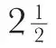

中文
中文F. A. Lindemann and T. C. Keeley
Editor’s Note
In the early 1930s, liquid helium had become precious to physicists studying the properties of matter at very low temperatures. Here the physicist Frederick Lindemann and colleagues at the University of Oxford announced the development of a new means for producing large quantities of liquid helium. Their technique used the liquefaction of hydrogen under an abrupt change in pressure to cool helium, and could produce large volumes of the liquid in continuous operation with relatively cheap apparatus. The liquid helium lasted in their laboratory for about one and one-half hours. This method and subsequent developments would enable the Soviet physicist Pyotr Kapitza to discover the phenomenon of superfluidity in liquid helium in 1938. 中文
THE main properties of liquid helium have been familiar to men of science for a great many years. The only object therefore in liquefying it is in order to cool other substances the characteristics of which it is desired to study in the neighbourhood of the absolute zero. It has long been known that the heat capacity of solids becomes extremely small at low temperatures. Thus the latent heat of evaporation of 20 mgm. of liquid helium is sufficient to cool 60 gm. of copper from the temperature to be attained with liquid hydrogen boiling under a reduced pressure to the boiling point of helium. 中文
It is easy to design apparatus so that the substances the properties of which at low temperatures are under investigation, are cooled to the temperature of the surrounding liquid or solid helium and maintained at this temperature with a minimum of waste. It seemed preferable, therefore, to instal a small inexpensive apparatus requiring comparatively little liquid hydrogen, which can therefore be operated frequently or duplicated at comparatively small cost, rather than to indulge in a plant designed to produce liquid helium in large quantities. In any event, the financial resources available would have imposed this choice, even had the alternative procedure been considered desirable. 中文
The apparatus which has been installed at Oxford is of a type developed by Prof. Simon and Dr. Mendelssohn in Berlin and Breslau. Two concentric cylinders capable of withstanding a pressure of some 150 atmospheres surround the space in which the substance under investigation is placed. Helium under a pressure of about 100 atmospheres is introduced into the space between the cylinders. The upper part of the annular space between the cylinders is separated from the lower, in which the helium is compressed, by a metal sheet, thus forming a small metal container which is joined by a spiral of thin copper tubing to a source of pure hydrogen. The whole is held in position on a German silver tube in the centre of a larger metal vessel containing hydrogen or helium gas at low pressure which can be evacuated by means of a mercury vapour pump. This outer vessel together with the copper spirals through which the hydrogen and helium are introduced is immersed in a Dewar flask containing liquid hydrogen. 中文
When temperature equilibrium has been attained, hydrogen is introduced into the top vessel under a pressure of two or three atmospheres. Passing through the copper spirals, this liquefies owing to the excess pressure and runs down into the metal container over the double-walled helium cylinder. A tap to the mercury vapour pump is now turned on and a high vacuum produced in the metal box, so that the helium container with its superposed pot of liquid hydrogen is thermally insulated save for the necessary connecting tubes. 中文
The yield of liquid helium is improved if the compressed helium is further cooled by boiling the hydrogen in the inner container under reduced pressure. If the helium is now allowed to expand, about half of it liquefies and the central space with the experimental substances it contains is cooled to the temperature of the surrounding helium. By evacuating the space above the liquid, that is, causing it to boil under reduced pressure, one can, of course, reduce the temperature to within one or two degrees of the absolute zero. 中文
In the apparatus used at Oxford the helium lasts for about an hour and a half. If the experiment is not finished in this time, one can repeat the process in a few minutes at very small cost in liquid hydrogen. The helium expands into a rubber bag and is recompressed into a cylinder so that very little gas is lost. The temperature during the experiment can be observed on a large-scale manometer connected through a fine tube to a small vessel containing helium in the liquefaction space. The apparatus cost approximately £30. Since there is no need to recompress the helium rapidly, a small cheap compressor is sufficient. 中文
The liquid hydrogen required is produced in a plant of the standard pattern designed in the Physico-Chemical Institute in Berlin which has been in use at Oxford for some years now without giving any trouble. Impurities in the hydrogen are condensed by a preliminary expansion and continuously removed by a slow stream of hydrogen. With a compressor capable of dealing with ten cubic metres of free gas an hour and an expenditure of approximately 1.4 litres of liquid nitrogen per litre of liquid hydrogen, this plant produces some

litres of liquid hydrogen per hour. Liquefier and compressor together cost approximately £ 350. 中文
The liquid hydrogen is stored in pyrex Dewar flasks silvered and exhausted in the laboratory. As their efficiency equalled that claimed for the more complicated double vessels developed by Prof. Kapitza, they have been retained. 中文
If low temperature work expands and a large number of experiments are in hand simultaneously, it may be necessary to consider the use of the continuous Linde process of liquefaction. In view of the cost of the gas and the precautions necessary for its recovery, its distribution involves considerable inconvenience, which for the time being are scarcely worth facing. The mere liquefaction, of course, offers no difficulties and there is little doubt that the Berlin type of apparatus, which is already in use in many laboratories, will prove as serviceable and efficient as the hydrogen liquefier, should it ever be necessary to change over to this system. 中文
Finally, a word of thanks is due to Dr. Mendelssohn, who kindly brought the liquefier over from Breslau and placed all his knowledge and experience unreservedly at the disposal of the department. But for this, it would scarcely have been possible to obtain, without hitch or trouble, liquid helium within one week of the arrival of the apparatus in Oxford. 中文
(131, 191-192; 1933)